Laravel is a web application framework with expressive, elegant syntax. It is a free, open-source PHP web framework, created by Taylor Otwell back in 2011 and intended for the development of web applications following the MVC model.
MVC mean (Model, Views, Controller). Model-View-Controller is a software architecture, or design pattern, that is used in software engineering, whose fundamental principle is based on the idea that the logic of an application should be separated from its presentation. Put simply, I would say that MVC is simply a better way of separating the logic of your application from the display. Model represents an object or carrying data. It can also have logic to update controller if its data changes.
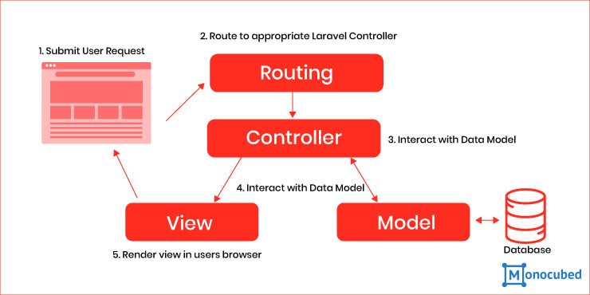
The MVC principle is to separate the application into 3 main parts, known as the Model, the View, and the Controller. The inferred associations are associations that might seem apparent from the point of view of the user, and not from the actual software design.
A simple way to think of this would be to consider the following:
A user interacts with the view
by clicking on a link or submitting a form.
The Controller handles the user input, and transfers the information to the model
The Model receives the information and updates it's state (adds data to a database, for example, or calculates todays date).
The View checks the state of the Model and responds accordingly (listing the newly entered data, maybe)
The View waits for another interaction from the user.
Laravel is a MVC framework with bundles, migrations, and Artisan CLI. Laravel offers a robust set of tools and an application architecture that incorporates many of the best features of frameworks like CodeIgniter, Yii, ASP.NET MVC, Ruby on Rails, Sinatra, and others.
Laravel is an Open Source framework. It has a very rich set of features which will boost the speed of Web Development. If you familiar with Core PHP and Advanced PHP, Laravel will make your task easier. It will save a lot time if you are planning to develop a website from scratch. Not only that, the website built in Laravel is also secure. It prevents the various attacks that can take place on websites.
Laravel offers the following key features –
As touched on above, MVC is a really good way to begin producing clean, scalable, powerful, fast code in the least amount of time with the least amount of effort. Some MVC frameworks do not contain all these features, most contain one or two. My advice is experiment with a few MVC frameworks and find one that works for you.
Laravel utilizes Composer to manage its dependencies. First, download a copy of the composer.phar. Once you have the PHAR archive, you can either keep it in your local project directory or move to usr/local/bin to use it globally on your system. On Windows, you can use the Composer Windows installer.
First, download the Laravel installer using Composer.
composer global require "laravel/installer=~1.1"
Once installed, Create a new directory anywhere in your system for your new Laravel project. After that, move to path where you have created the new directory and type the following command there to install Laravel.
composer create-project –-prefer-dist laravle/Laravel ProjectName
We need Xampp, we can download it from their official page, download and install it. We will configure a Virtual Host in Xampp for a Laravel project. We need to edit C:\xampp\apache\conf\ extra\httpd-vhosts.conf and add following lines at the end of the file:
# VirtualHost for LARAVEL.DEV<VirtualHost *:80>DocumentRoot "C:\xampp\htdocs\test_1\public"ServerAdmin localhost<Directory "C:\xampp\htdocs\test_1">Options Indexes FollowSymLinksAllowOverride AllRequire all granted</Directory></VirtualHost>
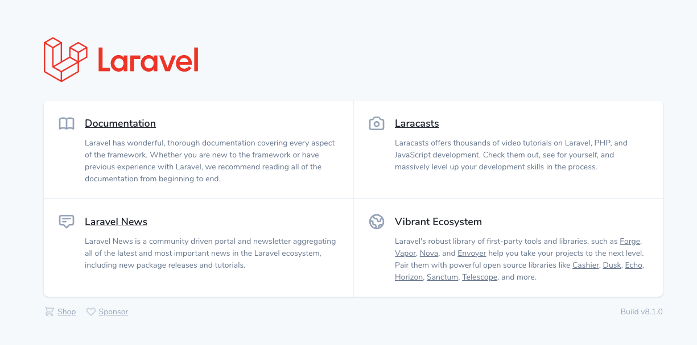
Congratulations!!, Your first Laravel Application running in localhost. Open your Browser type localhost or 127.0.0.1 the default Welcome page will appear, enjoy it.
The root directory of Laravel contains various folders and files as shown in the following figure -
The config directory, as the name implies, contains all of your application's configuration files. In this directory, you will find various files needed to configure database, session, mail, application, services etc.
After installing Laravel, the first thing we need to do is to set the write permission for the directory storage and bootstrap/cache.
Generate Application key to secure session and other encrypted data. If the root directory doesn’t contain the .env file then rename the .env.example to .env file and execute the following command where you have installed Laravel. The newly generated key can be seen in the .env file.
You can also configure the locale, time zone, etc. of the application in the config/app.php file.
Php artisan key:generate
Laravel support different environment like testing, production etc. You can configure the environment of your application in the .env file of the root directory of your application. If you have installed Laravel using composer, this file will automatically be created.
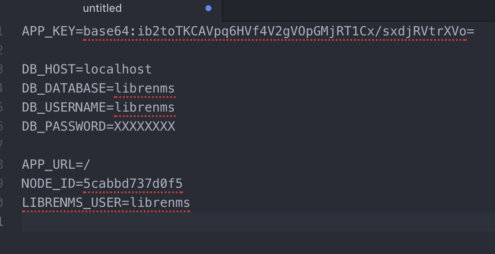
Local environment variable has been set. It can further be changed to production or testing as per your requirement.
The database of your application can be configured from config/database.php file. You can set configuration parameters that can be used by different databases and you can also set the default one to use.
'default' => env('DB_CONNECTION', 'mysql'),
'connections' => ['sqlite' => ['driver' => 'sqlite','database' => env('DB_DATABASE', database_path('database.sqlite')),'prefix' => '',],'mysql' => ['driver' => 'mysql','host' => env('DB_HOST', '127.0.0.1'),'port' => env('DB_PORT', '3306'),'database' => env('DB_DATABASE', 'forge'),'username' => env('DB_USERNAME', 'forge'),'password' => env('DB_PASSWORD', ''),'unix_socket' => env('DB_SOCKET', ''),'charset' => 'utf8mb4','collation' => 'utf8mb4_unicode_ci','prefix' => '','strict' => true,'engine' => null,],'pgsql' => ['driver' => 'pgsql','host' => env('DB_HOST', '127.0.0.1'),'port' => env('DB_PORT', '5432'),'database' => env('DB_DATABASE', 'forge'),'username' => env('DB_USERNAME', 'forge'),'password' => env('DB_PASSWORD', ''),'charset' => 'utf8','prefix' => '','schema' => 'public','sslmode' => 'prefer',],],
We need to modify our website on a regular basis. The website needs to be put on maintenance mode for this. Laravel has made this job easier. There are two artisan commands which are used to start and stop the maintenance mode which are described below.
php artisan down (maintenance mode)php artisan up (stop maintenance mode)
Most of the routes for your application will be defined in the routes/web.php file. The simplest Laravel routes consist of a URI and a Closure callback.
Route::get('/', function(){return 'Hello World';});Route::post('foo/bar', function () {return view('welcome');});Route::put('foo/bar', function () {// your code …});Route::delete('foo/bar', function () {// your code …});
In MVC framework, the letter ‘C’ stands for Controller. It acts as a directing traffic between Views and Models. In your terminal or cmd:
php artisan make:controller <ContorllerName>
It will generate the controller at app/Http/Controller/ControllerName.php with some basic coding already written for you and you can add your own coding based on your need.
<?phpnamespace App\Http\Controllers;use Illuminate\Http\Request;class ControllerName extends Controller{// your code here.}
Create a new folder in your resources/view and give the name is " pages ".
Create three new files in your resources/view/pages and give the name are home.blade.php, about.blade.php and services.blade.php
In your routes/web.php –
Route::get('/', function(){return view('pages/home');});Route::get('about', function(){return view('pages/about');});Route::get('about', function(){return view('pages/services');});
Results:
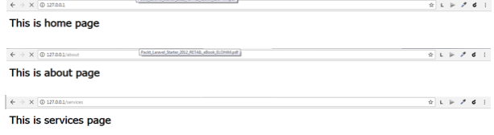
Passing through the data from controllers to view.
app/Http/Controllers/PagesControllerpublic function index(){$value = 'this is home comes from controller';return view('pages/home', compact('value'));}}
route/web.php.Route::get('/', 'PagesController@index');
<h1>This is Home</h1><hr><p>{{$value}}</p>
Result:
What is View?
In MVC framework, the letter ‘V’ stands for Views, . It acts as in the context of a Model View Controller (MVC) architecture, is a software class that contains a template and data form and produces a response for the browser. It receives data from the Controller of the MVC and packages it and presents it to the browser for display.
What is Blade?
Blade is the simple, powerful templating engine provided with Laravel. Unlike other popular PHP templating engines, Blade does not restrict you from using plain PHP code in your views. In fact, all Blade views are compiled into plain PHP code and cached until they are modified, meaning Blade adds essentially zero overhead to your application. Blade view files use the .blade.php file extension and are typically stored in the resources/views directory.
Two of the primary benefits of using Blade are template inheritance and sections. To get started, let's look at a simple example. First, we will examine a "master" page layout. Since most web applications maintain the same general layout across various pages, it's convenient to define this layout as a single Blade view:
<!-- Stored in resources/views/layouts/app.blade.php --><html><head><title>App Name - @yield('title')</title></head><body><div class="container">@yield('content')</div></body></html>
When defining a child view, use the Blade @extends directive to specify which layout the child view should "inherit". Views which extend a Blade layout may inject content into the layout's sections using @section directives. Remember, as seen in the example above, the contents of these sections will be displayed in the layout using @yield:
@section('content')<p>This is my body content.</p>@endsection
resource/views.app.blade.php .home.blade.php , about.blade.php, service.blade.php.@extends('main');@section<h1>This is about.</h1>@endsection
app/resources/view given the name is navigation.footer.blade.phpheader.blade.php.footer.blade.php.You can combine some common HTML code into a single template and want to pull in the template within another template.
Add these codes to yourapp.blade.php file.
@include('navigation/header')<div class="container" id="main">@yield('main');</div>@include('navigation/footer');
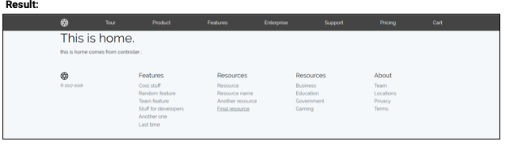
Database Configuration
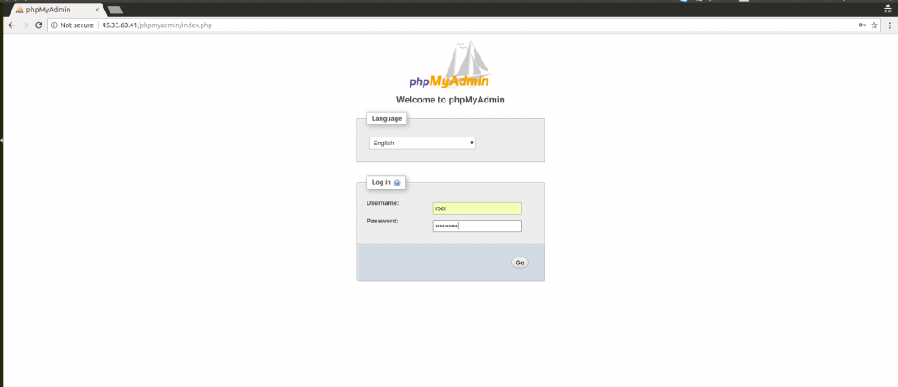
app/config/database.php'mysql' => ['driver' => 'mysql','host' => env('DB_HOST', '127.0.0.1'),'port' => env('DB_PORT', '3306'),'database' => env('DB_DATABASE', 'first_laravle'),'username' => env('DB_USERNAME', 'root'),'password' => env('DB_PASSWORD', ''),'unix_socket' => env('DB_SOCKET', ''),'charset' => 'utf8mb4','collation' => 'utf8mb4_unicode_ci','prefix' => '','strict' => true,'engine' => null,],
DB_CONNECTION=mysqlDB_HOST=127.0.0.1DB_PORT=3306DB_DATABASE=first_laravleDB_USERNAME=rootDB_PASSWORD=
app/Providers/AppServiceProvider file -namespace App\Providers;use Illuminate\Support\ServiceProvider;use Illuminate\Support\Facades\Schema;class AppServiceProvider extends ServiceProvider{/*** Bootstrap any application services.** @return void*/public function boot(){//Schema::defaultStringLength(191);}/*** Register any application services.** @return void*/public function register(){//}}
php artisan migrate
Results-
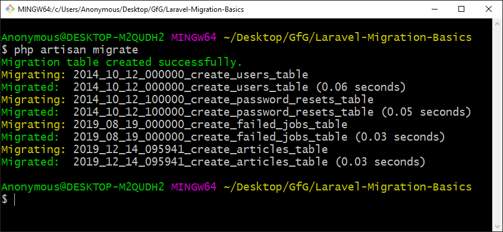
This will creat in your databe table.
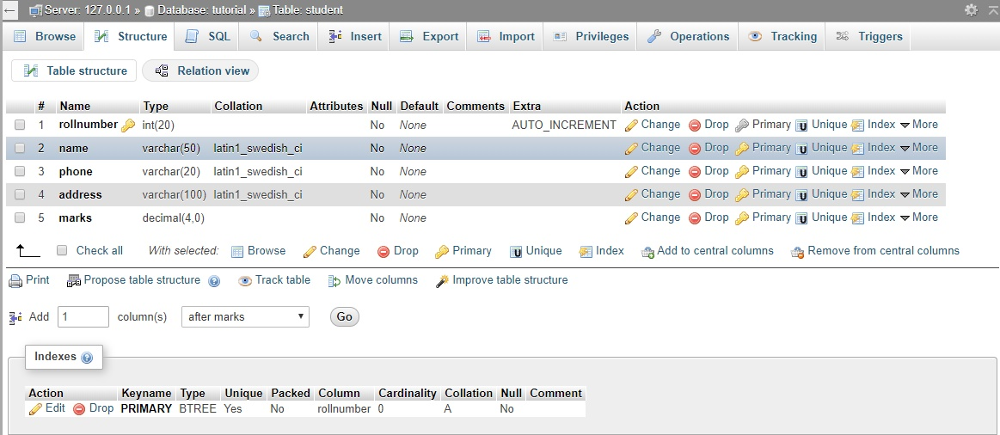
What is Resources Controller
Laravel resource routing assigns the typical "CRUD" routes to a controller with a single line of code. For example, you may wish to create a controller that handles all HTTP requests for "posts" stored by your application. Using the make:controller Artisan command, we can quickly create such a controller:
Resources Controller Generating Using Artisan Command
In your cmd type this command will create a controller inside your
Http/Controller/PostsController.
php artisan make:controller PostsController --resource
Mass Assignment Model
Mass assignment is a process of sending an array of data that will be saved to the specified model at once. In general, you don’t need to save data on your model on one by one basis, but rather in a single process. Mass assignment is good, but there are certain security problems behind it. What if someone passes value to the model and without protection.
Create a Mass Assignment Model run this command .This will create in your App/Post.php and App/database/post schema file.
php artisan make:model Post -m
Add the code in your App/database/post schema file –
public function up(){Schema::create('posts', function (Blueprint $table) {$table->increments('id');$table->string('title');$table->text('body');$table->timestamps();});}
And then run in your cmd php artisan migrate.
Getting to Know the Laravel Tinker Shell
Laravel includes a powerful REPL, called Tinker, powered by Justin Hileman. The tinker console allows you to interact with your Laravel application from the command line in an interactive shell.
What is a REPL?
REPL stands for Read—Eval—Print—Loop, which is a type of interactive shell that takes in single user inputs, evaluates them, and returns the result to the user. I first learned about the concept of an interactive console through the rails console, which is part of the Ruby on Rails framework. Other languages, such as Ruby, come equipped with a REPL as a language feature. An interactive shell is a nice way to experiment with a language and framework.
Creating Posts From Artisan Tinker
php artisan tinker.>>> App\Post::count(); // counting post=> 0>>> $post = New App\Post(); // defined variable=> App\Post {#2311}>>> $post->title ="Title One" // creating title=> "Title One">>> $post-> body ="this is title one's body" //creating body=> "this is title one's body">>> $post->save(); // save post=> true>>> App\Post::count();=> 1>>>
>>> App\Post::count(); //Reading all Posts=> 0>>> $post = New App\Post();=> App\Post {#2311}>>> $post->title ="Title One"=> "Title One">>> $post-> body ="this is title one's body"=> "this is title one's body">>> $post->save();=> true>>> App\Post::count();=> 1>>>
>>> App\Post::find(1); // Find Post using id=> App\Post {#2315id: 1,title: "Title One",body: "this is title one's body",created_at: "2018-04-27 23:50:23",updated_at: "2018-04-27 23:50:23",}Update Record From Artisan Tinker>>> $post = App\Post::find(1); // first find the record=> App\Post {#2323id: 1,title: "Title One",body: "this is title one's body",created_at: "2018-04-27 23:50:23",updated_at: "2018-04-27 23:50:23",}>>> $post->title="update title one"; // edit record=> "update title one">>> $post->save(); // save record=> true>>> $post = App\Post::find(1);=> App\Post {#2320id: 1,title: "update title one",body: "this is title one's body",created_at: "2018-04-27 23:50:23",updated_at: "2018-04-28 00:50:16",}>>>
>>> $post = Post::Find(4); // Find Post[!] Aliasing 'Post' to 'App\Post' for this Tinker session.=> App\Post {#2319id: 4,title: "title four",body: "body four",created_at: "2018-04-28 00:55:47",updated_at: "2018-04-28 00:55:47",}>>> $post->delete(); // Deleting Post=> true>>> $post = Post::Find(4);=> null>>> updated_at: "2018-04-28 00:50:16",}>>>
Creating Post Index
index.blade.php.use App\Post;public function index(){$posts = Post::all();return view('posts/index', compact('posts'));}
Route::resource('/posts', 'PostsController');In your resources/view/posts/index.blade.php file add these codes –@extends('app');@section ('main')@foreach($posts as $post)<div class="card"><div class="card-body"><h1>{{$post->title}}</h1><p>{{$post->body}}</p></div></div>@endforeach@endsection
Result:
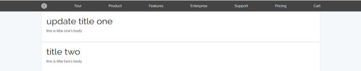
composer require "laravelcollective/html":"^5.4.0"
'providers' => [// ...Collective\Html\HtmlServiceProvider::class,// ...],
'aliases' => [// ...'Form' => Collective\Html\FormFacade::class,'Html' => Collective\Html\HtmlFacade::class,// ...],
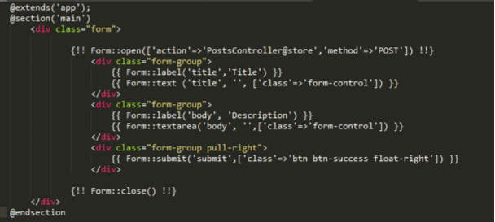
public function create(){return view('posts/create');}
public function store(Request $request){$this -> validate($request,['title'=>'required','body' => 'required']);$post = New Post;$post -> title = $request->input('title');$post -> body = $request->input('body');$post-> save();return redirect('posts');}
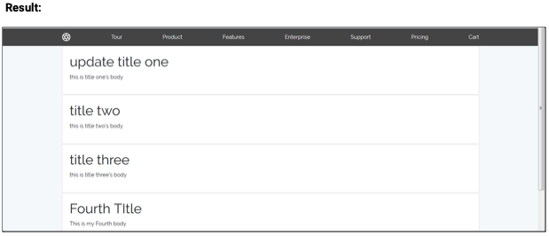
public function show($id){$post = Post::find($id);return view('posts/show', compact('post'));}
@extends('app')@section ('main')<div class="card"><div class="card-content" style="padding:50px"><h1>{{$post->title}}</h1><p>{{$post->body}}</p></div></div>@endsection
Result:
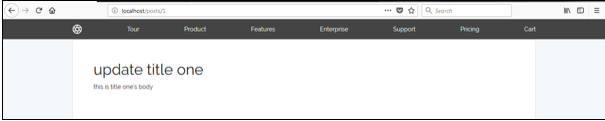
public function edit($id){$post = Post::find($id);return view('posts/edit', compact('post'));}
resources/view/posts/edit.blade.php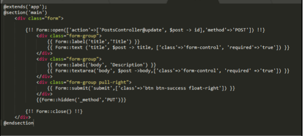
public function update(Request $request, $id){$this -> validate($request, ['title' =>'required','body' =>'required']);$post = New Post;$post = New Post;$post -> title = $request->input('title');$post -> body = $request->input('body');$post-> save();return redirect('/posts/'.$post->id );}
Result:
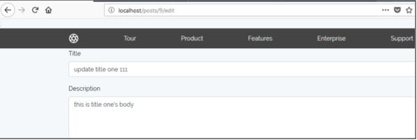
Create delete button in your index.blade.php
In your PostsController destroy function
public function destroy($id){$post = Post::find($id);$post -> delete();return redirect ('/posts');}
Reslut:
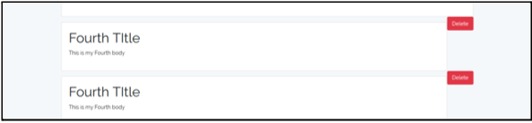